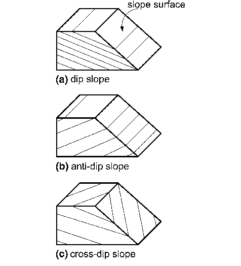
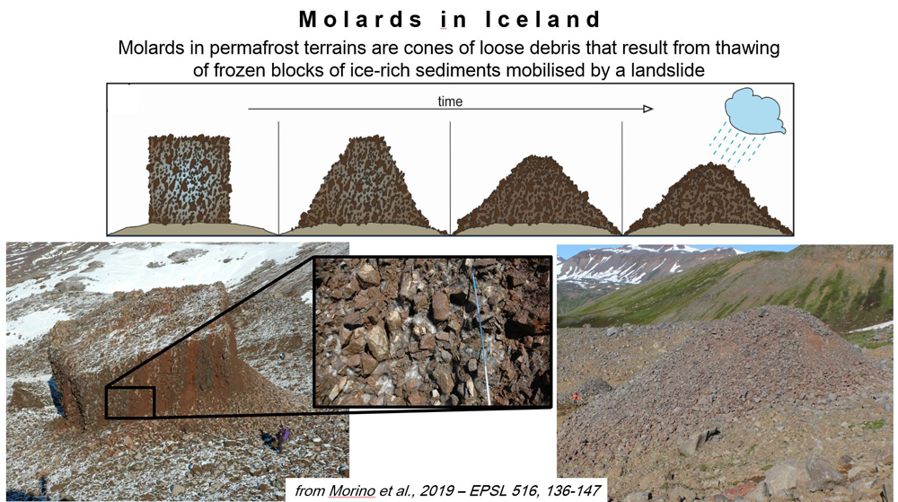

Landslide ScienceSisimmasut Ilisimatusarnerat
Understanding the geological processes and mechanisms behind landslide phenomenaSisimmasut pillugit nunap pissutsiisa paasineqarnerat
Tsunamis
[Untranslated Text]
Landslides, by themselves, normally just impact the area immediately around where the event occurs. However, landslides that end up in bodies of water frequently create tsunamis. Tsunamis can travel further than landslides, and have the potential to cause major destruction of property or even loss of life. They also travel quickly. It can be a matter of minutes between when a landslide hits the water and when a nearby village sees huge waves.
The size of tsunamis depends on the speed and energy the material from the landslide has when entering the water. This can depend on a number of factors. The steepness of a slope, resistance to movement provided to the ground, and mass of moving materials all impact how big a resulting tsunami will be.
Animation of a tsunami generated by a subaerial landslide [1]
References
- National Oceanic and Atmospheric Administration. "Tsunami Generation from Landslides." NOAA Jetstream. https://www.noaa.gov/jetstream/tsunamis/tsunami-generation-landslides
- U.S. Geological Survey. "How do landslides cause tsunamis?" USGS FAQs. https://www.usgs.gov/faqs/how-do-landslides-cause-tsunamis
Dip-Slope Failures
[Untranslated Text]
A dip-slope is a landform that consists of layers of rock (strata) that lie parallel to the direction of the slope. They form as a result of erosion among rock layers with differing erosion resistance, and they are prone to landslides given the angle of the underlying rock. Dip slope failure occurs when a block of rock detaches from the mountain and slides down a weaker layer of rock, resulting in a potentially catastrophic landslide, as the sliding rock often takes the form of a very large sheet. The 2017 series of landslides in the Karrat Fjord region is theorized to be a result of dip slope failure.
Dip slopes can be identified by comparing the angle of the slope to that of the underlying rock; if the angles differ by less than 20 degrees, it is a dip slope. Since these landforms are prone to instability, the movement of rock material on these slopes should be monitored in order to determine whether they pose a hazard.

Diagram highlighting the unique morphology of a dip-slope [2]
References
- Svennevig, K., Hicks, S. P., Forbriger, T., Lecocq, T., Widmer-Schnidrig, R., Mangeney, A., Hibert, C., Korsgaard, N. J., Lucas, A., Satriano, C., Thibaut, M., and Schippkus, S. "A rockslide-generated tsunami in a Greenland fjord rang Earth for 9 days." Science, 385, 1196–1205 (2024). https://www.sciencedirect.com/science/article/pii/S0013795219306544
- ResearchGate. "Bedding-slope relationship: a-dip-slope b-anti-dip-slope c-cross-dip-slope." ResearchGate. https://www.researchgate.net/figure/Bedding-slope-relationship-a-dip-slope-b-anti-dip-slope-c-cross-dip-slope_fig4_227114563
Molards
[Untranslated Text]
During landslides over land including permafrost, sometimes chunks of permafrost will break off and move. These chunks contain debris and sediments glued together by ice. They can act like boulders, rolling downhill with the other material in the landslide. Sometimes, these boulder-like chunks stop on the slope they are moving down and get locked into place. Over time, as these blocks sit on the surface of a slope, the ice begins to melt. After the ice is gone, a cone-shaped pile of debris is left behind. These cones are called molards.
Scientists are becoming more and more interested in finding and understanding molards. They can serve as important evidence for where permafrost-related landslides have occurred. Molards can also be dangerous. If another landslide occurs after the molards are formed, the moving rock can easily sweep up this loose debris and grow in size.

Diagram and photos of molards in Iceland [1]
References
- International Permafrost Association. "Permolards project: Tracking the degradation of mountain permafrost with molards." IPA. https://lpg-umr6112.fr/en/permolards-project-tracking-the-degradation-of-mountain-permafrost-with-molards/